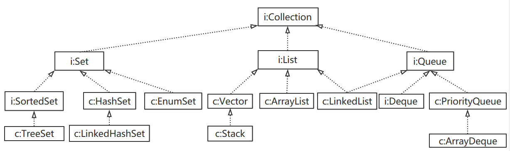

Linux常用命令总结
平时工作中有时候会用到一些常用的Linux命令，所以打算整理一下，便于翻阅，后续再补充
-
目录切换命令
- pwd 查看当前路径
-
cd 目录名 切换到指定目录下
【cd命令系列】
-
cd ../ 切换到上级目录
-
cd / 切换到根目录（所有用户共享的目录）
-
cd ~ 切换到用户主目录，root用户相当于cd /root；普通用户相当于cd /home/当前用户名
-
cd - 切换到上一个所在目录（此目录之前所在目录）
-
-
目录或文件操作命令
-
ls 显示不隐藏的文件或文件夹
-
ls -a 显示当前目录下所有文件及文件夹，包括隐藏的.和..
-
ls -l 显示不隐藏的文件与文件夹的详细信息 =>即 ll
-
mkdir 目录名 创建目录
-
touch 文件名 新建文件
【mv命令系列】
-
mv 旧文件 新文件 对文件重命名
-
mv 文件 目录 将文件移动到目录中
-
mv 旧目录名 新目录名 新目录存在则将旧目录移动进去，不存在就新建
-
cp (-r) 目录名 目标路径 拷贝目录或文件；单个文件不需要-r（表示递归）
【文件查看命令系列】
-
cat 默认最后一屏内容
-
more 百分比 回车下一行，空格下一页，q退出查看
-
less PgUp/PgDn上下翻页，q退出查看
-
tail -N 查看文件后N行
【VIM命令系列】
三种模式： 命令模式（Command mode），输入模式（Insert mode）和底线命令模式（Last line mode）
三种模式转换如图所示：
-

简单的编辑过程如下：
- vi 文件名
- 按i进入编辑模式
- 进行内容编辑
- 按Esc回到命令模式
- :wq 保存并退出或者:q!强制退出
-
-
压缩和解压缩
- 解包：tar zxvf filename.tar
- 打包：tar czvf filename.tar dirname
- 解压：unzip filename.zip
- 压缩：zip filename.zip dirname
-
权限命令
-
chmod 权限 文件名
【Linux权限表示方式】
数字4、2、1分别代表读r(read)、写w(write)、执行x(execute)权限
针对拥有者、群组、其他组都需要设置读写执行这三种权限
7=4+2+1
因此777表示拥有者、群组和其他组都具有读写执行权限，其他以此类推。
-